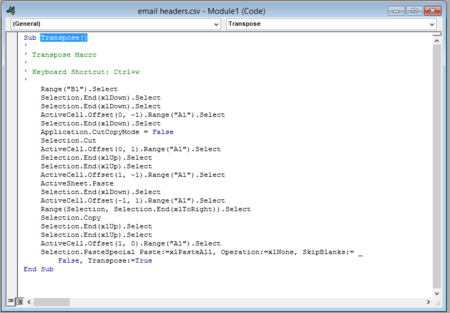
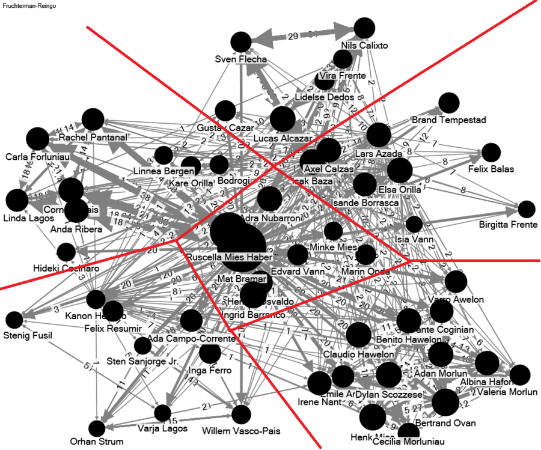
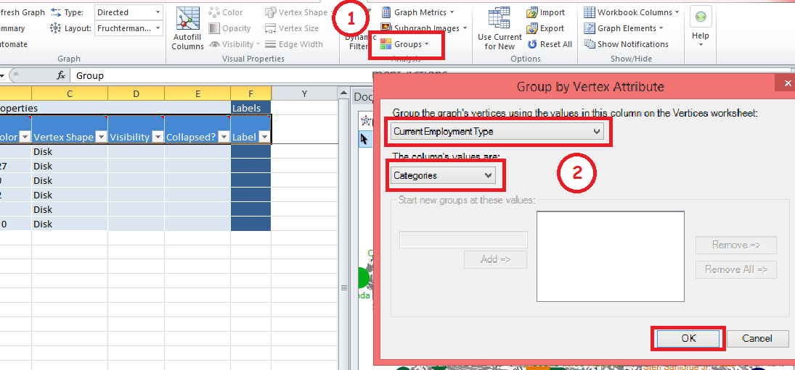

Collaboration is the way modern business is carried out and communication within organizations reflects both formal and informal information exchange. Using social network analysis, relationships between employees can be studied to have a better understanding of informal organisation structures. Up until recently, most studies of organization from a network perspective are based on time consuming and laborious questionnaire survey methods. Furthermore, the data collected is static whereby it can only provide snapshots of the organisation network at a given time. However, organizations are dynamic systems and therefore can change constantly over time. Last but not least, network analysis results are usually presented in the form of abstract statistics, which are not easily understood by senior management.
Recently, Isande Barranco, the CFO of GASTech had attended a professional training course on Social Network Analysis for Organisation Insights conducted by Professor Kam at School of Information Systems, Singapore Management University. At the training course, Isande learned that the data captured in the company’s e-mail logs can provide actionable insights on the company’s informal organisation structures by integrating graph visualisation and social metrics. After learning that you are currently taking the Visual Analytics for Business Intelligence course conducted by Professor Kam, she has assigned you to conduct a study to discover “networks of informal organisation structures” within GASTech from the company e-mail log data by using graph visualization and network analysis tools such as NodeXL and Gephi.
"Over the past decade or so significant restructuring efforts have resulted in organizations with fewer hierarchical levels and more permeable functional and organizational boundaries. While hopefully promoting efficiency and flexibility, a byproduct of these restructuring efforts is that coordination and work increasingly occur through informal networks of relationships rather than through formal reporting structures or prescribed work processes".
"Research shows that appropriate connectivity in networks within organizations can have a substantial impact on performance, learning, and innovation, and benefits also accrue from well-connected networks between organizations."
To verify the above statement, in this assignment, I will focus on the following questions to identify GASTech's formal and informal structure and whether the internal network would improve the efficiency or distract employees' attention and reduce the efficiency as a result.
Initial question: Does the communication in GASTech follows the hierarchy structure? If not, what's the current communication structure in GASTech and what's the reason for that? Is it true that the higher the hierarchy the more the communication?
Second question: What's the communication pattern for each department ? And what's the reason behind the pattern?
Final question: Can we find any relationship, formal or informal, that hindered the operation and the efficiency of the team ? What's my suggestion for such issue ?
Data Resources:
The data is provided by Prof Kam, includes:
A chart describing the local GAStech organization, in PDF format.
A spreadsheet of GAStech employee records, in Microsoft Excel format. The primary worksheet contains the data; the index worksheet contains the data dictionary
Email headers from two weeks of internal GAStech company email, in comma-separated values (CSV) format
The data can be found at the following link:
https://www.dropbox.com/s/yyh5z04d91uki01/asign03_data.zip?dl=0
Data Preparation:
The data shown below is the raw data downloaded from https://www.dropbox.com/s/yyh5z04d91uki01/asign03_data.zip?dl=0
However, this raw data can not be in use directly, a further modification is needed:
Actions on the raw data:
Separate the multiple receivers into different rows
- Insert 12 blank columns besides the "Receiver" column. The number of blank column should be the maximum number of receivers.
In this case, is to insert 54 blank columns
- Highlight column "Receiver" and click on Data -> Text to columns
- In the pop up box, choose Delimited
- Select space and comma as Delimiters and click on Finish
- Use Macro to transpose multiple receivers into different rows and this is what the data looks like after running the macro

- You may notice that the data and subject are not filled in correctly. So the next step is to fill in the Date and Subject accordingly
- First filter the "Sender" column to exclude the entire blank cell
- Second create three new columns: "Help Column", "Insert Date" and "Insert Subject"
- Put in "Insert Date" inside the "Help Column" after the filtering
- Run the Macro code as shown below
- Last but not least, clear all the filter and use the formula below to fill in all the missing Sender, Date and Subject

2. Categorize Email Topics
- I intend to divide the email topic into two categories: Business Related and Casual Conversation
- Create a new column called Email Category
- Click on the Subject filter and select the topic that is belonging to Business Related topic and put in "Business Related" to the "Email Category" column created in the previous step.
- Put in "Casual Conversation" for the rest of the cells in "Email Category" column.
* Note: if it is hard to decide whether the email belongs to "Business Related" or "Casual Conversation", it's good to look at who are the receivers. If there are a lot of receivers, this email is very likely to be Business Related.
3. Add in extra information needed
- In order to have a clearer visualization, it is necessary to display the sender and receiver's name instead of email address because email address is too long.
- Open the "EmployeeRecord.xlsx" and use a "CONCATENATE" method to combine the first name with last name.
- Do a lookup in the Email Header.xlsx to match the email address with employee name
- I realize There are two emails having the same name: "Sten.Sanjorge Jr.@ gastech.com.kronos" and "Sten.Sanjorge Jr.@typhys.com.". I made an assumption here that those two emails address belong to the same person: Sanjorge Jr. Sten.
- Finally, I removed the email whose sender is the receiver to keep the data accurate. Below is how the data looks like after all the modification:
- Open the NodeXL. Copy and paste the email sender and receiver to the "Egdes" sheet under Vertex 1 and Vertex 2 column;
- Click on the Refresh Graph button and the Vertices will be auto-populated based on the Edges.
- Added in other information including: CurrentEmploymentType, CurrentEmploymentTitle, Subject and Email Category
- The initial Graph
- Add informative calculation for displaying tooltip
- Auto generate Edge Weight
- Assign Size and width to the graph
- For "Edges" Sheet. Click on the Prepare Data button, and select Count and Merge Duplicate Edges
- Select Vertex 1, Vertex 2 and "Topic Category" as grouping criteria
- After that, the NodeXL will automatically generate a Edge Weight for us
- To assign size for each node, I need to use the calculation result, column Total Email Exchange from the previous step
- Click on auto Fill Column on top and configure the Edge Width, Edge Opacity and Edge Visibility to be "Edge Weight"
It is very clear that every nodes almost have more or less the same size except a few nodes. Bramar Mat and Mies Haber Ruscella are two of them. Check with the organization's formal structure, I realize Bramar is the CEO assistant and Ruscelle is the Assistant to Engineering Group Manager.
Now I want to know why are those two employees having the biggest amount of emails and where does the emails come from. The large amount of emails is due to too much incoming emails or sent emails? To answer my question, I add a direction to the edges indicating the source of the email.
- Below are the steps on how I add direction to the edges
- Click on NodeXL tab, choose Direct for the Type
As for business perspective, I'm worried Bramar has too much workload because she has a lot of business emails ongoing. And I'm quite surprised that Bramar plays such a central role in the network in terms of information flow when his position is just a mid-level manager. My interpretation is that it is because of the role itself, a CEO assistant. Bramar will receive tasks from CEO everyday and distribute the information to each group. I have a look at the Email header.xlsx to see what are the subjects Bramar sends out to other people. According to the email list, the information Bramar sends out are company announcement, lost and found, news etc. Based on such situation, my suggestion to the organization would be:
If communication and coordination is the only or the mainly task Bramar needs to do, then it is reasonable that Bramar has more business emails than other employees.
If coordination is only part of Bramar's responsibilities, then I would suggest the company hire another assistant to balance Bramar's workload because Bramar is likely to the bottleneck due to large amount of business emails.
To verify my guess that Mat Bramar has too much workload, I checked at the
Email Header.xlsx
- I filtered the sender to select only Mat Bramar
- Copy and paste the subject to another worksheet
- Click on Remove Duplicate to remove the duplicate
- Now comes to the result and I used a bar chart to show the trend of outgoing email
- The bar chart result
- Although the quantity of outgoing email is large, there are only 24 emails initiated by Mat Bramar in two weeks, average 2 emails per day. So my previous prediction that "Barmar has too much workload" is verified to be false. The workload for Bramar is ok. Most of the outgoing emails are the replies to other people. For instance, I notice there are 7 reply emails sent out only in one day, Jan 17th. For the reply emails on that day, 3 of 8 are about "logging result", 1 about "lost and found", 3 about "providing helping", 1 about "training program" and 1 about "policy".
So I would change my previous thought into "Mat Bramar is very responsive to other people and he is very informative that knows well about many things related to the company's policies and training programs"
- Since Mat Bramar have only 34 initial emails sent out in this two weeks, where does the huge amount of email communication comes from?
The answer is large amount of receiver. Because every announcement, gaming result or lost & found email is send to everyone in the organization, each email is counted as 53 (there are 54 employees) emails in my visualization. So in such case, the size of nodes (which represent the emails flow) may not accurately reflect the real quantity degree of email flow.
- Another interesting thing I find out is that Bramar sends more emails to this five people than the rest: "Pantanal Rachel", "Forluniau Carla", "Lais Cornelia", "Lagos Linda" and "Ribera Anda". Checking with GASTech's formal structure, I realized Bramar together with the rest 5 people are all from the same team, Administration team, so the internal communication is stronger than the external communication
- However, although they are from the same team, the "communication direction" is different. Checking the Email Header.xlsx, I find out Barmar sends out the same amount and the same subject of emails to all the five people. However, the communication between Bramar and "Ribera Anda", the assistant of CFO, is more like a two direction communication but the communication between Bramar and "Lagos Linda" ( the assistant of COO), "Forluniau Carla"(the assistant to IT manager), "Pantanal Rachel"(the assistant to CIO) is more like Bramar giving out information or tasks to them
- To know the reason behind it, I checked again with the Email Header.xlsx to see what are the topics Bramar sends out to these five people. They are: "Craft Night", "Dress for succeed", "Anyone have time to help...", "training opportunities", "update safety policy", "Lost & Found" and so on. And I also checked the emails Ribera replied to Barmar, 2 of 8 is about training and improving outlook, 2 of 8 is about helping out, 2 of 8 is about crafting night, 1 is about catering and 1 is about reminder. Since Ribera is interested in that training and improving outlook topic, maybe she is looking for a new job or looking for promotion. To verify my thought, I checked EmplyeeRecord.xlsx and find out she has been in GASTech for 4 years but now she's still just an assistant. So looking for new jobs and promotion is very likely to be the truth. Also, she replied Barmar's "looking for help" email twice, i think this fact tells us either Ribera is very helpful or Ribera is quite free to have time to help out.
As for casual conversation, Bramar and Miles are still the ones that are very active. Besides, "Osvaldo Hennie" and "Barranco Ingrid" are also very active. To have a closer look at the relationship between Bramar and "his friends", I goes back to the EmailHeader.xlsx to see what kind of email he sends out. Below are my findings:
- I find out Bramar is really free in the afternoon. All the casual conversation happens in the afternoon. Although he does not initiate all the casual emails, he actively participates in the conversation. So I conclude that Mat Barmar is not fully utilized in the afternoon and maybe GASTech could assign him more tasks to fully utilize him.
- It is amazing that as a male, Barmar is included in the "Babysitting recommendations". And he replied 12 times for such topic. This is strange. I checked Bramar's portfolio, he is a 33 years old male that has been in GASTech for 9 years. Through this 9 years, Barmar established a big friends base, and I guess thus is the reason why Barmar keeping receiving "casual conversation" emails all the afternoon
- When I was looking at the employee's record, I realized Carla and Barmar are coming to the company in the same year. For the same "Babysitting recommendations" topic, Barmar is also the first person Carla put into the receiver list. So I conclude that Barmar has a very very close relationship with Carla
- Another person who sends "babysitting" email to Barmar is Linda. So I assume Linda also have a close relationship with Barmar. So I checked the email list and find out Linda almost send out email to Barmar everyday. Linda is one year younger than Bramar and they are in the same team, so I'm not surprised they are good friends
So in the overall, Barmar is really a very popular person in the organization and he is not fully utilized according to the frequency he replies to jokes and gossips.
Looking at the graph, it seems the graph has roughly divided the whole organisation into several clusters (as shown on the graph below, I grouped the people who are closer in the graph by my first sight). I think the reason might be each group represents a department in GASTech. To verify my guess, I grouped the organisation by department and applied color for each team to distinguish.

- Click on the Group button
- Select CurrentEmploementType as grouping criteria and Categories as column's value
- Click on OK

- Below is the final graph for this stage:
- Assign color and weight to edges
- Assign shape to distinguish some important roles like assistant, advisory, Security, CEO and SVP
- Below is the result after I applied all the configuration:
Now let's zoom into each cluster and analyze the betweenness, centrality index and cloeseness.
First of all, looking at the transparency, which means the betweenness of all the employees, I found out that the ones located at the centre of the circle has a more solid color than those remove nodes. That means the nodes at the center have much more emails ongoing than the nodes that is at the edges of the circle.
- Looking at the pattern of IT team in both diagrams, there's a Trapezoid linked "Flecha Sven", "Baza Isak", "Alcazar Lucas" and "Calixto Nils" and a outsider node. The isolated node stands for "Bergen Linnea" and he is the Peripheral People who is isolated from the team's communication
- Checking with the organisation's structure, I find out Bergen Linnea is actually the IT team's top manager. I think this situation is unusual because the manager have to keep a close relationship with the sub-committee in order to monitor the group's progress ad control the project quality
- To understand why the top manager doesn't get along well with the team, I checked with the EmploymentRecord.xlsx and here is Bergen Linnea's record
This employee record tells me that Bergen is a 45 years old female while the rest of the IT team members are 24 to 45 years old male. Bergen cannot get along well with the rest members might because the team members are sexism that they don't like to hang out with Bergen. The big age difference also built a gap between the team manager and the team members
So my suggestion would be for Bergen, he should communicate more with his team members and maybe shift to another department that she's more capable.
- Check with EmailHeader.xlsx, I find out that there are only 4 types of email involved Linnea: Service anniversaries, Remember Casino night, Changes to travel policy and Mandatory training. All the other progress report like issue report and bug report are not sent to Linnea. This is strange because project manager have to receive all those information in order to monitor the grogress and take necessary actions when needed.So my suggestion is to include manager Linnea inside the progress report email receiver list
- The same problems occurs in the Casual Conversation network. Linnea is also remote from the conversation within the IT team.
Looking at the Emailheader.xlsx, the team only sends Linnea on casual email about inviting him for lunch. But Linnea NEVER REPLIED YET. All the other casual topics, like "interesting articles", "buying coffee", "borrow trimmer" etc are not involving Linnea. So I think although being in GASTech for almost 9 years, Linnea doesn't have a good relationship with the IT team. He may not be a good person be the IT manager to be honest because he either care about the project progress or care about his employees
- The network structure for Information Technology team is very interesting. We can easily find out the pattern that there's a very frequent communication within the team itself and the communication with other team is not as much as within the team.(If you compare the inner communication within other team themselves, you will find out this IT team has the most strong inner communication). I think this is because IT team is a kind of "knowledge" based team that it is important to share and integrate the knowledge across the whole team. Also if the team is a dedicated project based team, there will be even more collaboration within the team because they are work closely to deliver the project within tight time, budget and performance constrains. And Information Technology don't really have much administrative work to do, the communication between IT team and Administration team is less
- The executive team has an unified hierarchical structure with management staff at the center
- From the size of the CEO (SANJORGE, jr) we can see that he doesn't have as much email flows as other executive members because his nodes are smaller. Instead, Barranco Ingrid is the center of Executive's network. This is reasonable because as the highest level of the company, SANJORGE may only need to deal with big strategic decision making rather than the subtle issues. However, that doesn't mean CEO doesn't have much things to deal with, he transferred most of the communication work, like spread announcement, to Bramar Mat, the CEO assistant belonging to Administration Team
- Checking the email list of Sanjorge, I find that out of 10 emails sent out, 8 of them are sent to the Environmental Safety Advisory to consult the policies, operational inefficiencies and yearly number. I think Sanjorge really trust this advisory so he discussed a lot of things with him frequently. Sanjorge even consults him about good place to spend holiday. So I can feel Sanjorge and the advisory, Willem, are not only business partner, but also close friend
- On the other hand, from the graph I find that Sanjorge also sent files to the truck driver, this is strange. What kind of file need the CEO sent to a truck driver? The CEO could totally ask his assistant to send to the truck driver, why does he need to sent the file by himself? And this truck driver really caught my eyes because I often saw the truck driver appear in the email receiver list that executive level manager sent. I really want to know how does those truck drivers get to know the executive level managers
- * The list below shows the frequent contact person for truck drivers:
.png) - For CEO, the business network is almost the same as informal network. In Sanjorge's business network, his sub-committees and Barmar are the person whom Sanjorge contacts the most and it is the same for Sanjorge's casual network
- For Ingrid Barranco, the second most active person in the executive team, he communicate to a even wider range of people in GASTech, almost everyone. From the graph we can see that Barranco sends out almost the same amount of emails to everyone and by checking his email list, he talked mainly about policies, profits, media, IPO and all those financial related topics, which involves many department in the company. But when I look at the email list of Barranco, most of the emails are the replies to others and only 2 emails are initiated by him ("Maximizing quarterly profits" and "Impact of local politics on profit margin"). That means Barranco doesn't like to use email to communicate or his job doesn't require much communication
- On the other hand, Barranco rarely sends out casual conversation with others. From the graph we can see that he sends out only two personal emails and those 2 emails are "reply email" to "plant". So I think Barranco does not have many friends in the company
- So my conclusion for Barranco is that as a CFO, he's not very talkative and he seems doesn't have many friends in GASTech. He doesn't like sending emails to the company but he's very responsive and informative that a lot of people like to ask questions to him and he always replies those emails within 2 hours
- Administration team has a flatter and less centralized structure. This is because administration team are formed mainly by the assistants of all the executive team members like CEO, CFO and COO that correspondingly have a close relationship with each department. The graph also tells me that the communication within administration team is quite balanced overall, although Barmar has a bit larger quantity of emails
- Looking at the casual conversation within the administration team, I find out this team is very dissociated that every casual email is sent to all the team members without excluding anyone of them. The casual topic range from inviting for dinner together to babysitting discussion
- The pattern for engineering team is clear: This group divides roughly equally into two dominant communities. One is in the center and the other is in the outer layer. Such divide reflects the fact that this group was recently merged by two existing groups. The formal organization hierarchy structure also confirmed my deduction;
According to GASTech's structure, there are two "groups" inside the engineering team: the group lead by group manager and the group lead by Site Manager
- For CEO, the business network is almost the same as informal network. In Sanjorge's business network, his sub-committees and Barmar are the person whom Sanjorge contacts the most and it is the same for Sanjorge's casual network
- For Ingrid Barranco, the second most active person in the executive team, he communicate to a even wider range of people in GASTech, almost everyone. From the graph we can see that Barranco sends out almost the same amount of emails to everyone and by checking his email list, he talked mainly about policies, profits, media, IPO and all those financial related topics, which involves many department in the company. But when I look at the email list of Barranco, most of the emails are the replies to others and only 2 emails are initiated by him ("Maximizing quarterly profits" and "Impact of local politics on profit margin"). That means Barranco doesn't like to use email to communicate or his job doesn't require much communication
- On the other hand, Barranco rarely sends out casual conversation with others. From the graph we can see that he sends out only two personal emails and those 2 emails are "reply email" to "plant". So I think Barranco does not have many friends in the company
- So my conclusion for Barranco is that as a CFO, he's not very talkative and he seems doesn't have many friends in GASTech. He doesn't like sending emails to the company but he's very responsive and informative that a lot of people like to ask questions to him and he always replies those emails within 2 hours
- Administration team has a flatter and less centralized structure. This is because administration team are formed mainly by the assistants of all the executive team members like CEO, CFO and COO that correspondingly have a close relationship with each department. The graph also tells me that the communication within administration team is quite balanced overall, although Barmar has a bit larger quantity of emails
- Looking at the casual conversation within the administration team, I find out this team is very dissociated that every casual email is sent to all the team members without excluding anyone of them. The casual topic range from inviting for dinner together to babysitting discussion
- The pattern for engineering team is clear: This group divides roughly equally into two dominant communities. One is in the center and the other is in the outer layer. Such divide reflects the fact that this group was recently merged by two existing groups. The formal organization hierarchy structure also confirmed my deduction;
According to GASTech's structure, there are two "groups" inside the engineering team: the group lead by group manager and the group lead by Site Manager

Note: Blank Color = Administration Team; Red color = Information Technology Team ; Orange Color = Executive Team; Yellow Color = Administration Team; Blue Color = Engineering Team; Green Color = Security
The left graph is Business Network and the graph on the right side is the casual network
- The Information Technology team and the executive team captured my eyes at once. There's very few communication between them. The rest members of the team are all well communicated. Besides, there are not much outgoing emails from IT team and executive team. So my conclusion is that IT team and Executive are not very social or don't like to be too friendly with the rest of the team
- From this second graph I find out that the administration is the center point that linked Security, engineering and facilities together. There's a large amount of email traffic on the administration side along the path Administration -> Security, Administration -> Engineering and Administration -> Facilities. However, The information technology team and executive team are far from the network
Do you really know your companies structure? Does the hierarchy in the company looks the same as the structure in the annual report? The answer is NO. There are a lot of personal network mingled with the formal structure that changed with formal structure without noticing. Such problem is what I was investigation in my assignment. I made a full use of NodeXL with email exchange record and employee record to discover the real "casual network" behind inside GASTech.
I do discover many interesting facts and I do have some suggestions to improve the communication and collaboration. I realize the most active person in GASTech is not a manager but the assistant of CEO. This is quite dangerous because the assistant of CEO might knows many confidential things about the company, having too many close friends in the company is a risk for information leakage. I also learnt that the IT manager seems have trouble getting along with her team because she only has very little communication with her team, no matter the business related communications or casual conversation.
However, we cannot come up the conclusion solely based on two weeks' email and less email exchange do not necessary mean that the employee is less connected with others because the employee might prefer phone calling instead of sending emails. So basically, email is able to tell us many hidden things but we need to look at the conclusions we get from the data critically.
 Tools Used: NodeXL
Tools Used: NodeXL